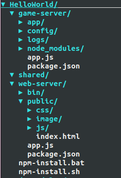

Let's start our pomelo tour with example "HelloWorld".
Create a New Project
Use pomelo command line tool to create a project quickly, the command is shown as follows:
$ pomelo init ./HelloWorld
Or you can use the three commands below:
$ mkdir HelloWorld
$ cd HelloWorld
$ pomelo init
These two ways are equivalent, for more about pomelo command line, please refer to pomelo command-line tool. NOTE, during initialization of project, users need to select the underlying communication protocol, socket.io or websocket.
Then, go into HelloWorld directory, install its dependencies by:
$ sh npm-install.sh
if you are a windows user, you should run npm-install.bat instead.
Project Directory Structure
Let's look at the general structure of a pomelo project.
The newly created project structure is shown below:

By filling the relevant code to corresponding directory, you can develop game server quickly. The following is a brief analysis of each directory and its sub-directory of a pomelo project:
game-server
Game-server contains the game logic code, using the file app.js as the entrance point to run all the game logics and functionality, and all the game logic , functionalities , configurations, and so on are placed into this directory.
- app subdirectory
All the game logic and functionality related code will be placed here, where users can implement different types of servers, by adding Handlers, Remotes, Components etc. to server.
- config subdirectory
The config subdirectory inside game-server contains all the configuration informations for the game server. All the configuration files are written in JSON format, including logs, master, servers and other server-specific configurations. This directory can contain configuration for the database connection information, map information, numerical tables, etc. as well. In other word, you can place any configurations relavant to the game server here.
- logs subdirectory
This subdirectory contains all the running logs of the game server.As we know, logs can be used to debug the project. Also, logs can be treated as a reference for project maitenance.
shared
Shared directory contains some shared code between server-side and client-side. If your client platform is HTML5 or other platform using javascript, then some javascript code implementing utils or algorithms can be used both client and server side, which improves the code reusability.
web-server
Web server is built based on express framework, and it provides the static resource service for web client if your client platform is web. Of course, developers can choose other web server like Nginx, Apache instead. If the client platform is not web, such as Android, iOS, then this directory will do nothing. However, in this example, the client platform is web, so the web-server is required.
Start Project
For this example, because the client platform is web, so you have to start both game-server and web-server.
Start game-server server by:
$ cd game-server
$ pomelo start
Start web-server server by:
$ cd web-server
$ node app
There may be port conflict that leads to fail during startup, if so, just modifying the server's port configuration will work. If all the above are ok and log printed shows that the servers are started sucessfully, then we can test our HelloWorld project.
With a browser(chrome recommended) accessing http://localhost:3001 or http://127.0.0.1:3001, then click Test Game Server, prompting game server is ok means the servers are running successfully, as shown below:

View Server Status
You can use pomelo list to view the status of servers that have been started, as shown below:
The status of a server includes:
- serverId: identify the server, it's configured by user via servers.json.
- serverType: serverType, it's configured by user via servers.json too.
- pid: process pid of the server.
- headUsed: The size of heap the server has been used(MB).
- uptime: The running time of the server(minutes).
Stop Project
You can stop the project by using the following two ways :
$ cd game-server
$ pomelo stop
or
$ cd game-server
$ pomelo kill
Where the pomelo stop is more elegant, while pomelo kill is relatively crude and low security. it can be used in development environment and if you use pomelo kill in production environment, you have to be very cautious.
Then, stop the web-server, just using Ctrl-C is ok.
Summary
Now, we have installed the pomelo and run the HelloWorld example successfully. Next, I suggest you look at a more detailed overview of pomelo. If you can not wait to write code, you can go to pomelo tutorial, where a chat application is illustrated and show you how to use the pomelo to develop a practical application step by step.